在火山视窗中提供了大量的组件，大部分组件和易语言操作方式一样，部分组件在使用方式上有所差异。
下面介绍部分组件使用上的小差异。
1、图片框
易语言演示：
在易语言中图片框组件设置图片都是通过“图片”属性设置，其类型是字节集。
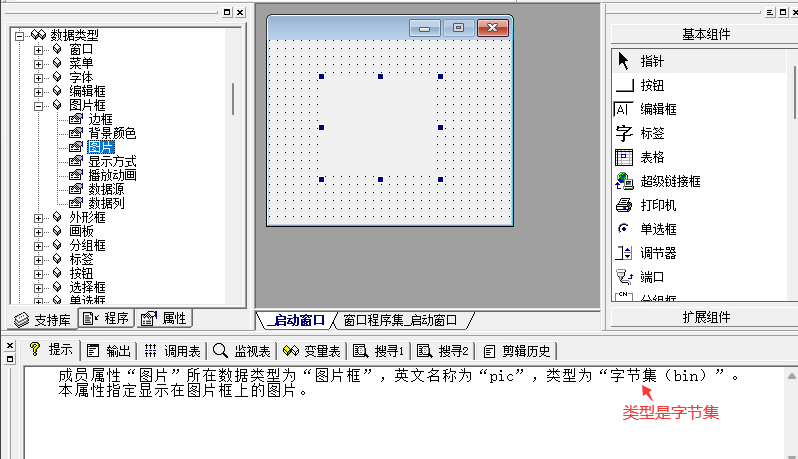
“图片”属性为可读可写属性，可以取出一个图片框的图片赋值给另外一个图片框显示。
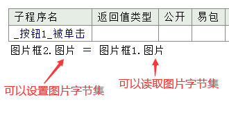
运行效果如下：
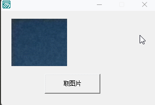
火山演示：
在火山中想要实现和易语言一样的效果，稍微有点复杂，因为火山视窗中图片属性的类型为“位图资源”，并且只有写属性，无法取出位图资源。
注：资源类型并不能动态设置，譬如通过文件载入等形式转换成资源。
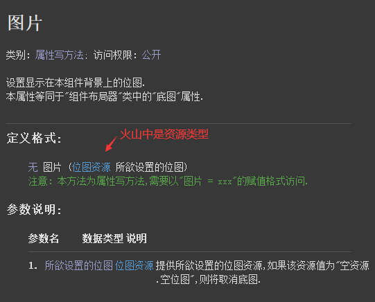
想要实现设置字节集图片数据，在火山中需要使用“置底图数据()”方法。
如果想要取出图片则需要使用“取底图()”方法。
注：本方法取出的图片为“位图对象类”，并且是通过参数返回。
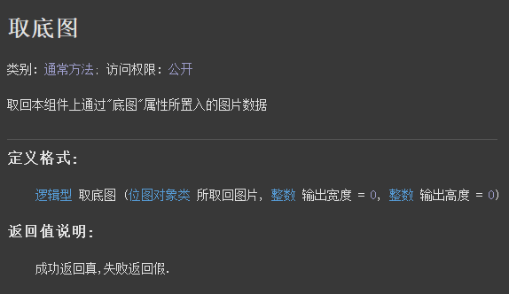
取出一个图片框的图片赋值给另外一个图片框显示，代码编写如下：
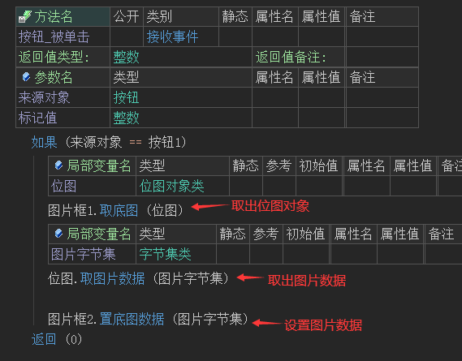
运行效果如下：
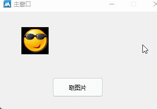
2、选择夹
易语言演示：
在易语言中选择夹的使用相对简单，直接可以在设计器中对选择夹的子夹内容进行设计。
如下图所示：
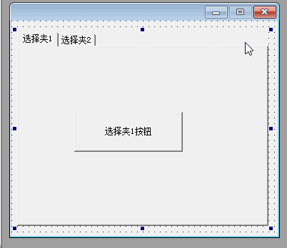
选择夹中组件交互也比较简单，如下所示：
直接输入组件名就可以控制组件。
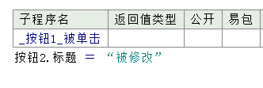
运行效果如下：
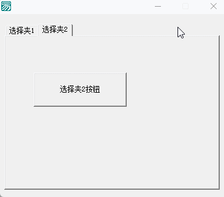
火山演示：
在火山中想要使用选择夹必须依赖“组件布局器”，组件布局器是火山视窗中提供的一种针对局部界面设计的通用窗口容器，它可以像窗口设计器一样进行界面设计，设计后的界面可以在任意窗口或容器中重复使用。
简单演示如下：
“Ctrl+D”新建一个类，基础类填写组件布局器，然后在右键菜单中就可以打开组件布局器的界面设计器。
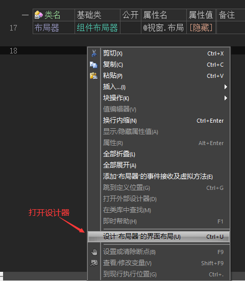
其界面设计器相对于窗口的设计器少了一个标题栏、除此之外没有任何区别。
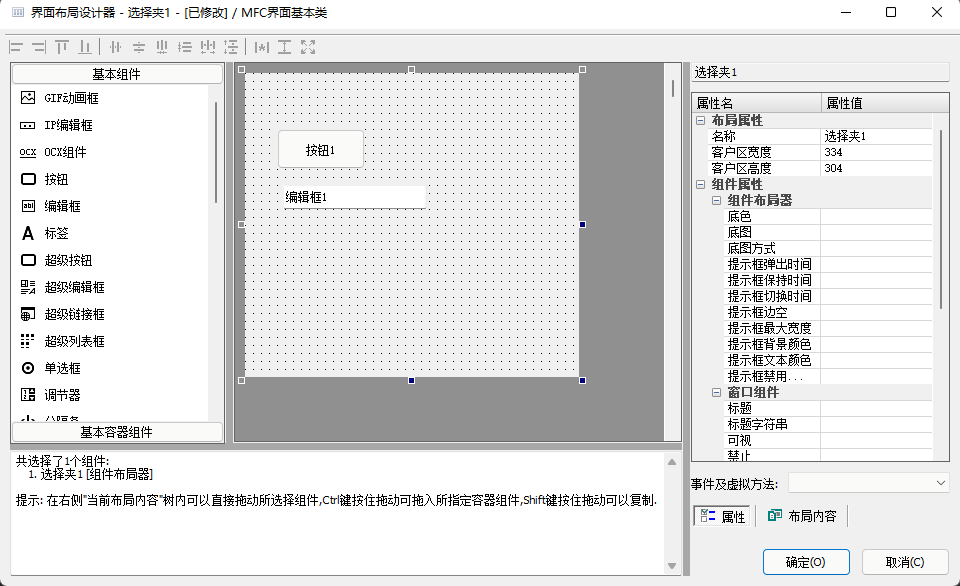
界面设计完毕后也会自动生成组件变量。
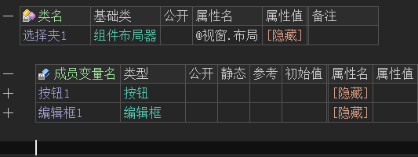
首先利用组件布局器设计两个界面出来，如下：
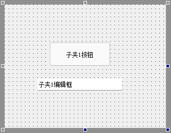
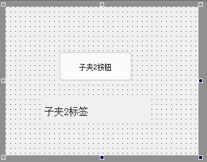
设计完成后公开组件，以便于后续选择夹交互操作。
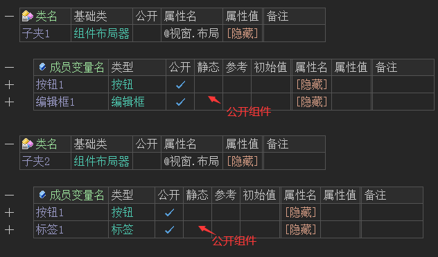
打开主窗口设计器，将选择夹组件放到窗口中。
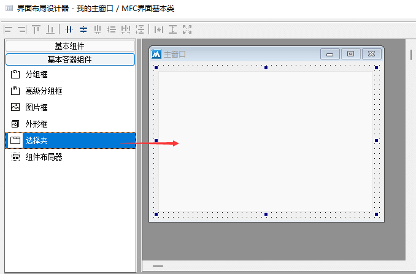
添加主窗口创建完毕事件，调用“选择夹”组件的“添加子夹()”方法就可以添加选择夹内容。
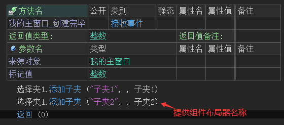
运行效果如下：
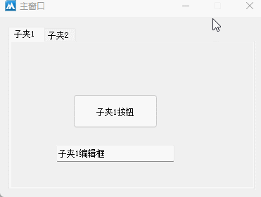
在火山视窗中选择夹的组件交互，如下所示：
(1) 首先定义组件布局器变量。
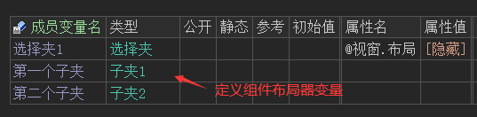
(2) 利用“取子夹内容组件()”方法取出子夹内容，务必注意子夹索引从0开始。
(3) 利用“挂接事件()”方法挂接组件布局器中的按钮事件。
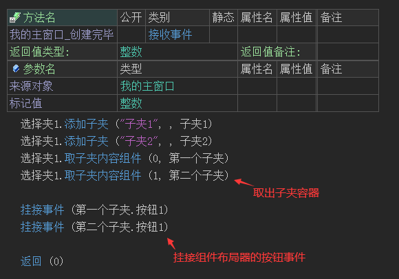
(4) 在主窗口中添加按钮被单击事件，判读组件布局器中的按钮是否被点击，并执行对应的修改操作。
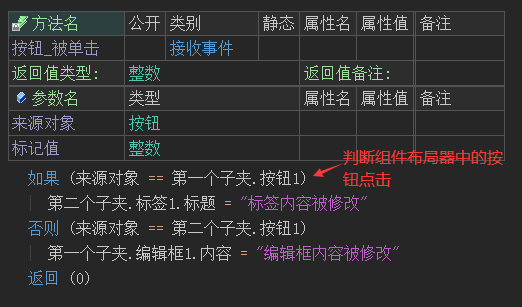
(5) 最终可以看到，实现了选择夹组件交互效果。
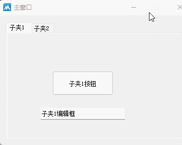
3、树形框(树型框)
树形框组件的差异主要体现在树形框项目上。
易语言演示：
在易语言中名叫“树型框”，其项目内容是字节集，通过“项目”属性可以进行读写操作。
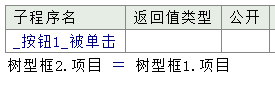
运行效果如下：
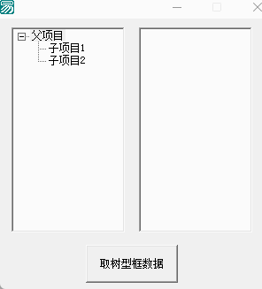
火山演示：
在火山视窗中名叫“树形框”，其项目内容是文本数据，如下所示：
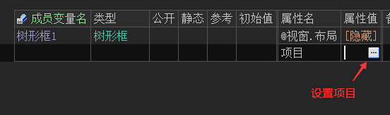
在树形框项目设置窗口中，随便添加几个项目。
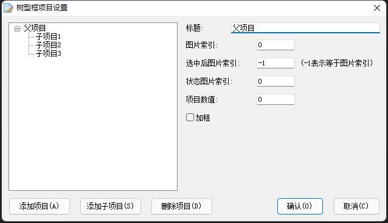
项目设置完毕后会自动生成文本格式的项目数据，其优点相对易语言更加方便数据存储或传输。
必要时可以自行拼接文本数据自行实现项目效果，每列信息为以'\n'字符分隔的字段，各个字段的意义为：
1. 文本: 名称;
2. 整数: 项目图标索引位置;
3. 整数: 为被选择状态时的图标索引位置,为-1表示与项目图标索引位置相同;
4. 整数: 用户数据;
5. 整数: 是否加粗;
6. 整数: 是否展开子项目;
7. 整数: 状态图标索引位置;
8. 整数: 缩进位置.
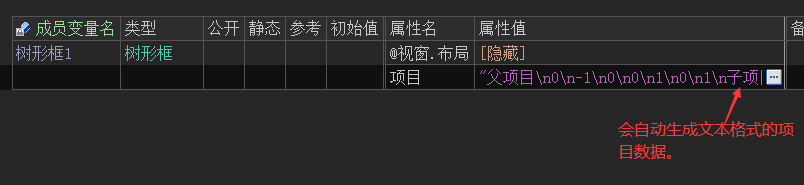
火山视窗中的项目属性同为可读写项目，可以非常方便实现不同树形框之间的项目赋值。
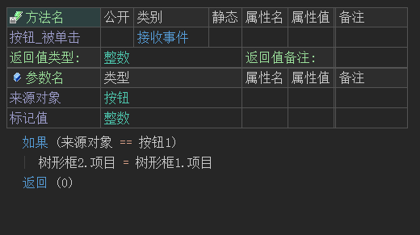
运行效果如下：
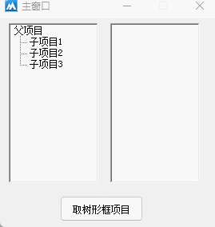
4、分组框
易语言的分组框和火山视窗的分组框效果一致，并且同样都有一个小问题，嵌套使用时分组框的字体会显示异常。
如下所示：
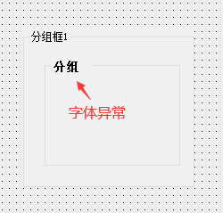
针对这一问题火山视窗额外提供了高级分组框解决此问题，如下所示：
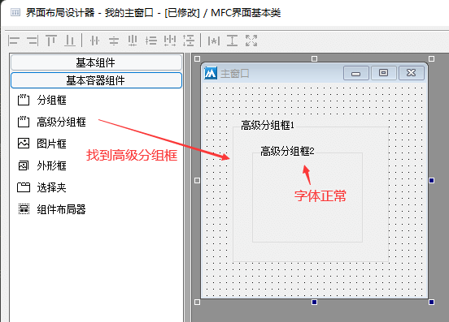
软件运行后字体也是正常状态：
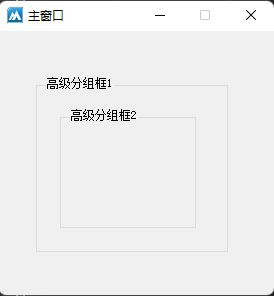
5、通用对话框
本组件比较特殊，在易语言中属于不可视组件，使用时需要在窗口设计器上绘制出来，但运行时此组件不可见，需要通过调用指定方法才能显示出来。
易语言演示：
在基本组件中可以找到通用对话框，将其画到窗口上就可以使用。
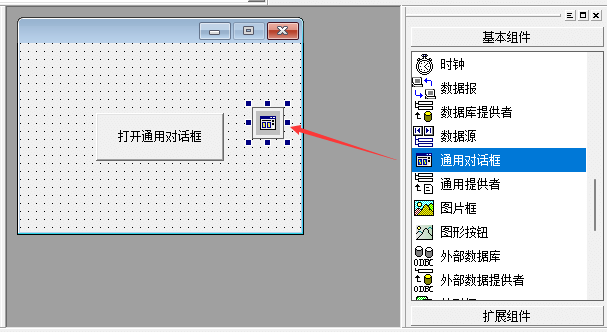
利用通用对话框实现浏览文件功能：
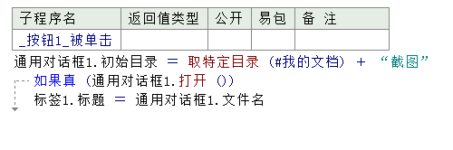
运行效果如下：
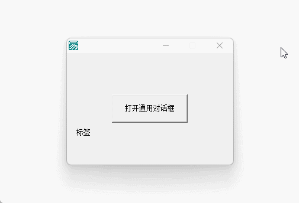
在火山视窗中对此组件进行了优化，不需要在窗口上绘制即可操作。
相对易语言，火山视窗中的“打开()”方法需要额外提供一个父窗口参数，如果需要在当前窗口类上弹出填写“本对象”即可，如果是其它窗口就提供对应的窗口对象名称。
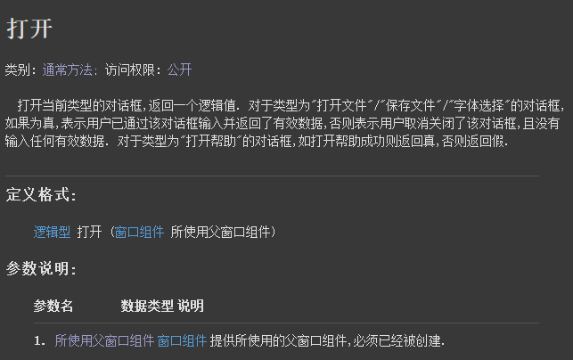
利用通用对话框实现浏览文件功能：
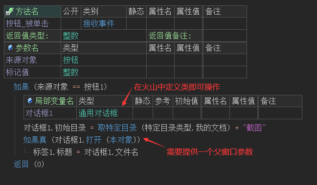
运行效果如下：
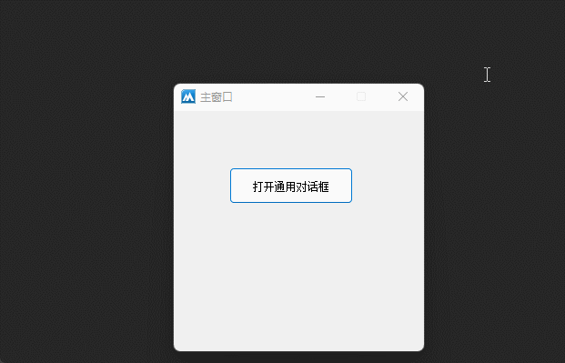
6、菜单
6.1 窗口菜单显示
易语言演示：
在易语言中可以右键窗口设计器，选择“菜单编辑器”即可打开进行菜单编辑。
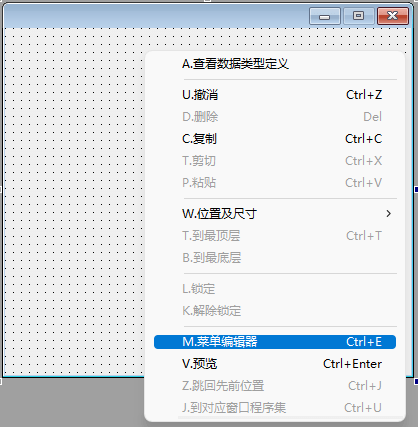
其界面效果如下：
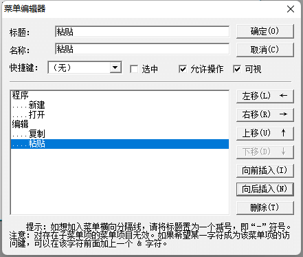
菜单编辑完毕后可直接在窗口设计器中查看到菜单效果。
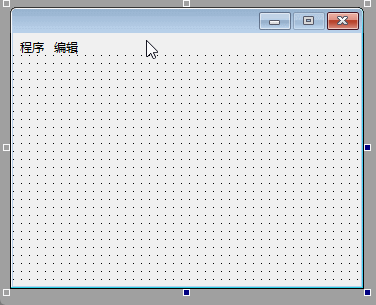
火山视窗演示：
在火山中需要单独定义基础类为“菜单类”的类，右键选择“打开菜单设计器”即可进行菜单编辑。
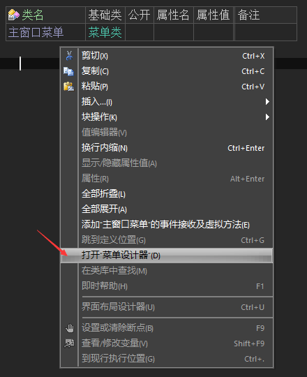
其界面效果如下，使用方式与易语言基本一致。
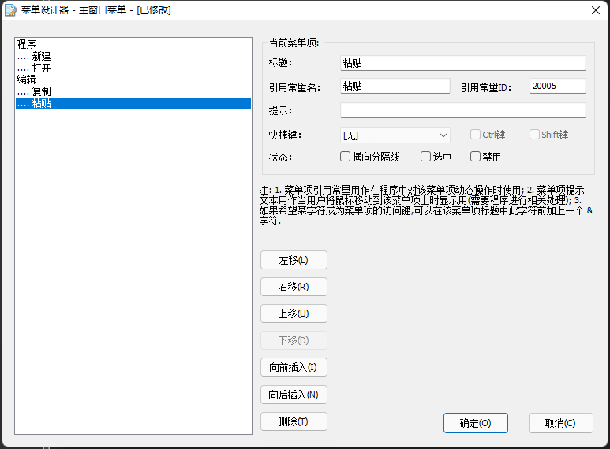
火山菜单设计完毕后，会自动生成菜单常量值，后续通过此常量值可操作菜单。
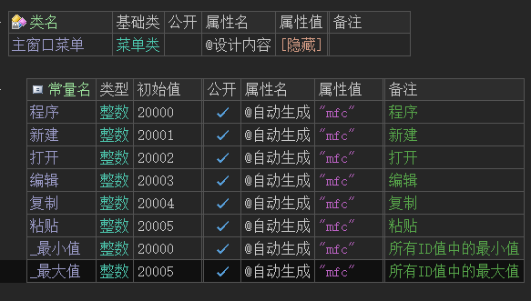
在火山中菜单并不会直接显示在窗口中，需要在窗口中定义菜单变量，调用“置菜单实例()”方法设置菜单。
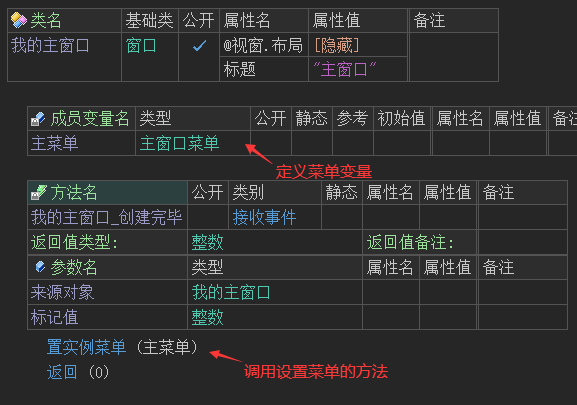
软件运行后才可以看到菜单效果：
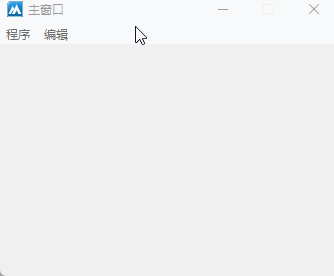
6.2 右键菜单与窗口菜单一致
易语言演示：
在易语言中直接调用“弹出菜单”方法，提供菜单名称就可以弹出指定菜单。
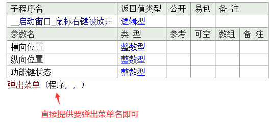
最终可以实现右键菜单与窗口菜单一致。
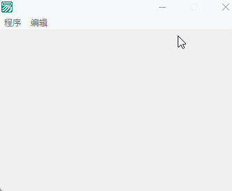
火山视窗演示：
在火山中想要实现同样的效果，首选需要将窗口菜单复制一份，并修改类名。
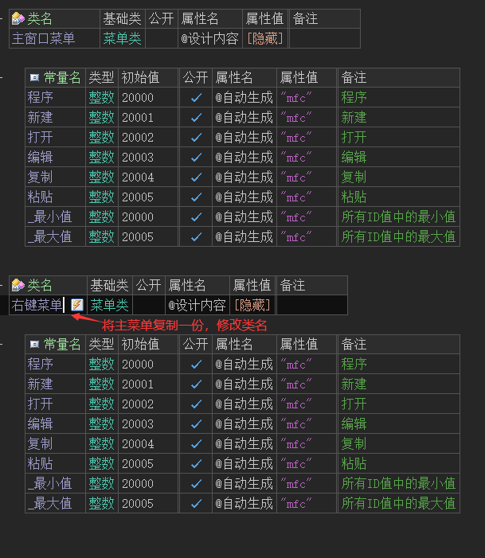
打开“右键菜单”的菜单设计器。
如果需要在右键中弹出“程序”菜单，就将其余菜单全部选中并删除。
注意：常量值不要随意修改，否则会导致菜单在使用时出现问题。
在使用时，需要定义菜单变量，并利用“弹出实例菜单()”方法进行弹出。
最终效果如下：
6.3 禁止菜单
易语言演示：
在易语言中直接通过菜单名调用“禁止”属性设置为真，就可以实现禁止菜单。
效果如下：
火山视窗演示：
在火山中需要通过菜单变量调用“允许菜单项()”方法来禁止菜单。
运行效果如下：
6.4 选中菜单
易语言演示：
在易语言中直接通过菜单名调用“选中”属性设置为真，就可以实现选中菜单。
效果如下：
火山视窗演示：
在火山中需要通过菜单变量调用“选中菜单项()”方法来选中菜单。
运行效果如下：
6.5 隐藏菜单
易语言演示：
在易语言中直接通过菜单名调用“可视”属性就可以实现显示或隐藏菜单。
效果如下：
火山视窗演示：
在火山中没有提供现成的可视方法，需要通过“删除菜单项()”和“插入菜单项()”来实现此效果。
运行效果如下：
6.6 菜单标题修改
易语言演示：
在易语言中直接通过菜单名调用“标题”属性就可以实现修改菜单标题。
效果如下：
火山视窗演示：
在火山中需要通过菜单变量调用“置菜单标题()”方法来修改标题。
运行效果如下：
6.7 菜单事件
易语言演示：
在易语言中需要通过窗口设计器，点击菜单项来添加菜单事件。
代码编写如下：
运行效果如下：
火山视窗演示：
在火山中所有菜单事件都是通过窗口的“接收到命令”事件接收，通过“命令代码”参数判断菜单被单击。
运行效果如下：